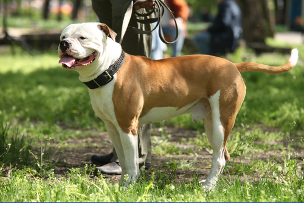

| דף ראשי | גזעים | מחלות | רקעים ותמונות | סקר | צרו קשר |
|---|
| קוקר ספאנייל |
| סמוייד |
| שפיץ יפני |
| פומרניאן |
| פודל |
| דני ענק |
| דלמטי |
| רועה גרמני |
| רועה קווקזי |
| רועה בלגי |
| בולדוג אמריקאי |
| בולדוג צרפתי |
| בולדוג אנגלי |
| צ'או צ'או |
| שיצ'ו |
| אמסטף |
| פינצ'ר |
| רוטווילר |
| דוברמן |
| האסקי סיבירי |
בולדוג אמריקאי
מידע נוסף
כלבי עבודה רבים הגיעו עם בעליהם במהלך המסעות ורבים מצאו בית חדש במדינה חדשה. עקב הדרישות החדשות שופרו חלק מהתכונות בזמן שחלק אחר נעלמו. זהו סיפורו של הבולדוג האמריקאי, מי שהחל את דרכו כלוחם בזירה נגד שוורים והפך ללוחם בחזירי בר. למרות כל אלה בולדוג אמריקאי הוא ענק עדין שאוהב לשחק, אבל מעבר לכל אוהב את הבעלים שלו אהבה ללא תנאי. אולי תנאי אחד - ליטוף ואיזה מילה כמו "כלב טוב" פה ושם.
בולדוג אמריקאי - מקור הגזע והסטוריה
מקור בולדוג אמריקאי או אמריקן בולדוג הוא מכלבי המאסטיף מאירופה. ייעודם המקורי היה כלבי קצבים, בגלל עוצמתו ונשיכתו החזקה. קצבים היו משחררים את הכלבים לנשוך ולהפחיד את הפרות לפני השחיטה מתוך האמונה שמעשה זה גורם לבשר להיות רך. מעבר לזירה הבולדוג גם שמר על החווה בתמורה לנתחים מבשר השחיטה. לאחר שנאסרה פעולה זו, החלו רבים לגלות את האופי הטוב שיש לבולדוג ורבים אימצו אותם כחיות מחמד. כך, תכונות רבות כמו מזג חם הפכו למזג עדין ונוח. בולדוג האמריקאי התחיל גם הוא ככלב עבודה ובדרום ארצות הברית היה רודף אחרי חזירי הבר ומונע מהם לגרום נזק לחווה. בתחילת המאה כמעט ונכחד הבולדוג האמריקאי ורק עקשנות של מגדל אחד שמרה על הגזע וכיום הוא נפוץ בארה"ב ובעולם כולו.
בולדוג אמריקאי - נתונים ומאפיינים
בולדוג אי אפשר לפספס, המראה האופייני לגזע הוא מבנה גוף רחב ושרירי, רגליים קצרות, ראש גדול ואף פחוס. הפרווה מגיעה במגוון צורות והצבעים העיקריים הם שחור, לבן וחום. וכמובן אי אפשר בלי הריר שמאפיין את הגזע והנחירות. משקל:30-58 ק"ג גובה:20-27 ס"מ
מחלות נפוצות וטיפול - כלב בולדוג אמריקאי
בולדוג אמריקאי סובל מדיספלסיה באגן ובמפרקים. בגלל מבנה האף והפה, אמריקן בולדוג סובל גם מאלרגיות וממחלות נשימה. בעיה נוספת מתרחשת בעיקר בקיץ, בו הבולדוג מתקשה לקרר את עצמו, בגלל חוסר היכולות לנשום מהר.
